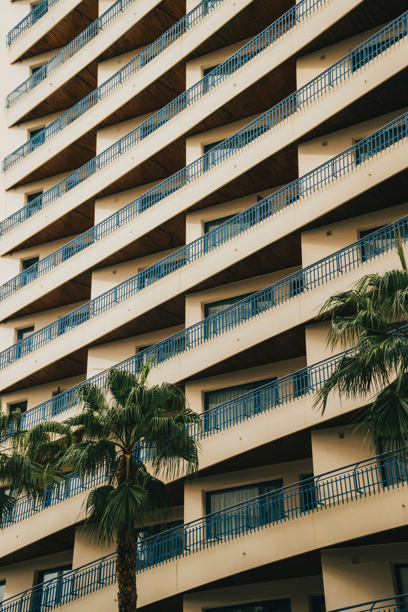
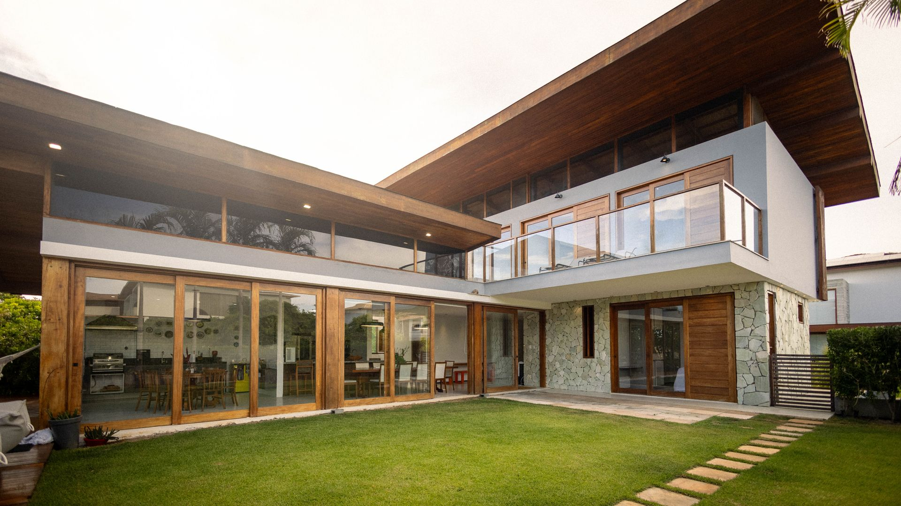

Especialistas en limpieza de cristales en altura
El skyline de Calpe es exigente. Ofrecemos un servicio de limpieza de cristales adaptado a la arquitectura vertical de la Playa de la Fossa y el Cantal Roig.
Hoteles y Complejos Turísticos
Mantenemos la imagen de su establecimiento con limpiezas programadas de fachadas y zonas comunes.
Edificios de Apartamentos
Soluciones para comunidades de vecinos que requieren mantenimiento en balcones y ventanales de difícil acceso mediante plataformas elevadoras o pértigas.


Cuidado profesional para villas y residencias privadas
Calpe cuenta con zonas residenciales exclusivas como Oltá, Maryvilla o Colina del Sol. Entendemos que su hogar es su refugio y tratamos sus cristales con la máxima delicadeza.
Limpieza de Grandes Ventanales
Especialistas en cristales de seguridad y vidrios de grandes dimensiones.
Tratamiento contra el Salitre
Vivir frente al mar es un privilegio, pero el salitre es implacable. Aplicamos tratamientos que protegen el vidrio y facilitan su mantenimiento posterior.
30 años dando brillo a la Marina Alta
No somos una empresa de paso. Conocemos la dureza del agua en Calpe y cómo afecta a los marcos de aluminio y PVC.
Agua Pura Osmonizada
Utilizamos sistemas de filtración propios para garantizar un secado sin marcas de cal.
Seguridad Garantizada
Personal formado y con seguros de responsabilidad civil específicos para trabajos en altura.
Limpieza de escaparates para el comercio y restauración
Para que los restaurantes del puerto o las tiendas del centro de Calpe atraigan clientes, sus cristales deben ser invisibles. Ofrecemos tarifas competitivas para mantenimientos semanales que aseguran un brillo constante.
Preguntas comunes sobre el servicio en Calpe
¿Realizáis limpiezas tras temporales de levante?
Sí, tenemos un servicio de actuación rápida para eliminar la costra de sal y arena que dejan los temporales en primera línea de playa.
¿Llegáis a urbanizaciones alejadas del casco urbano?
Cubrimos todo el término municipal, incluyendo zonas de montaña y urbanizaciones periféricas.
Recupere la luz de su propiedad en Calpe
No deje sus cristales en manos de aficionados. Confíe en la empresa que lleva 30 años garantizando la transparencia en la Costa Blanca.